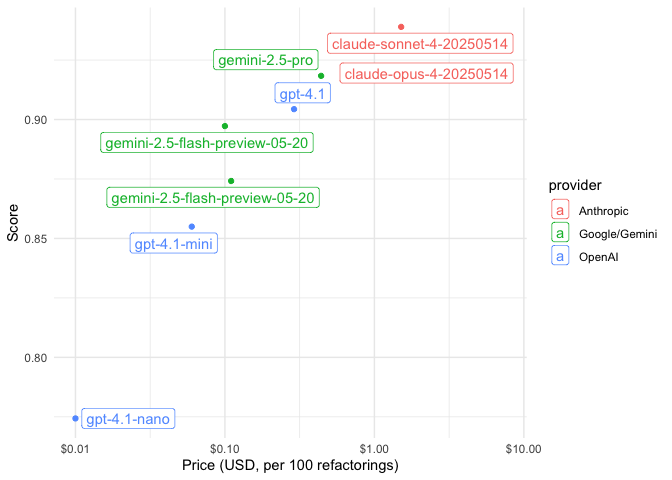

The chores package connects an extensible library of LLM assistants to your IDE aimed at helping you with tedious but hard-to-automate tasks. For the most capable LLMs today, like Anthropic’s Claude 4 Sonnet or OpenAI’s GPT 4.1, carrying out the sorts of tasks that chores supports is easy peasy. However, those models cost money (and require entrusting your IP with a for-profit company), and it’s a bit of a hoot to ask R users to put their credit card information down to use an R package.
This has made me wonder: Is it possible to use chores with a locally running LLM? The chores eval evaluates how well a large language model will perform as the model powering chores with the goal of helping me identify a model that chores users can run themselves on a modest laptop.
The chores eval is implemented with vitals, an LLM eval framework for R.
Installation
choreseval is implemented as an R package for ease of installation:
pak::pak("simonpcouch/choreseval")Load it with:
Example
As a reader of the eval, you’re mostly likely interested in chores, a dataset of compiled evaluation results:
library(tibble)
chores
#> # A tibble: 8 × 6
#> name provider model score price metadata
#> <chr> <chr> <chr> <dbl> <chr> <list>
#> 1 claude_opus_4 Anthropic claude-opus-… 0.917 $7.52 <tibble>
#> 2 claude_sonnet_4 Anthropic claude-sonne… 0.939 $1.51 <tibble>
#> 3 gemini_2_5_flash_non_thinking Google/Gemini gemini-2.5-f… 0.874 $0.11 <tibble>
#> 4 gemini_2_5_flash_thinking Google/Gemini gemini-2.5-f… 0.897 $0.10 <tibble>
#> 5 gemini_2_5_pro Google/Gemini gemini-2.5-p… 0.918 $0.44 <tibble>
#> 6 gpt_4_1_mini OpenAI gpt-4.1-mini 0.855 $0.06 <tibble>
#> 7 gpt_4_1_nano OpenAI gpt-4.1-nano 0.774 $0.01 <tibble>
#> 8 gpt_4_1 OpenAI gpt-4.1 0.904 $0.29 <tibble>
library(tidyverse)
library(ggrepel)
chores |>
mutate(price = as.numeric(gsub("$", "", price, fixed = TRUE))) |>
ggplot(aes(x = price, y = score, color = provider, label = model)) +
geom_point() +
geom_label_repel() +
scale_x_log10(labels = scales::dollar_format()) +
theme_minimal() +
labs(x = "Price (USD, per 100 refactorings)", y = "Score")
The chores_task() function defines a task with the package’s built-in dataset, solver, and scorer:
tsk <- chores_task()
tsk
#> An evaluation task The-chores-eval.Run $eval() with the solver_chat of your choice to measure how well that model does on the eval:
tsk$eval(
solver_chat = ellmer::chat_anthropic(model = "claude-3-7-sonnet-latest")
)